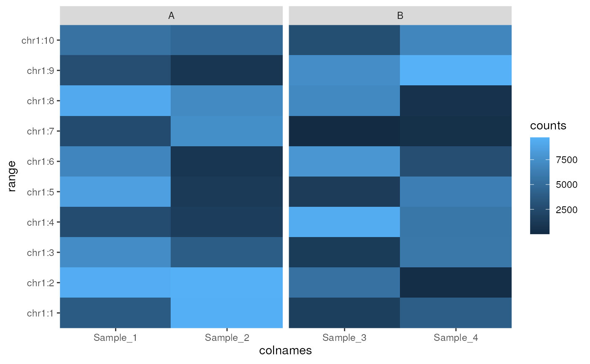

R/plotAssayHeatmap.R
plotAssayHeatmap-methods.RdUse ggplot2 to create a heatmap from a SummarizedExperiment object
plotAssayHeatmap(x, ...)
# S4 method for SummarizedExperiment
plotAssayHeatmap(
x,
assay = "counts",
by_x = "colnames",
facet_x = NULL,
ysideline = FALSE,
yside_col = NULL,
trans = NULL,
n_max = 100,
...
)a SummarizedExperiment object
Not used
the assay to take values from
the parameter to use for the x-axis. Will default to column names but should be one value per sample, such as an additional column containing shortened sample labels.
column from colData(x) which will be used to group samples along the x-axis
logical(1) Draw a line across the side of the y-axis summarising values for each range
column from colData(x) to group and colour the lines drawn on the side of the y-axis. If grouping by treatment or replicate, the mean values will be shown
character(1). Any transformative function to be applied to the
data before calculating the density, e.g. trans = "log2"
Maximum number of ranges to draw
A ggplot2 object. Scales and labels can be added using conventional
ggplot2 syntax.
Draw a heatmap containing selected values from an assay within a SummarizedExperiment object. Columns within the colData element of the object can be used to facet along the x-axis (e.g. treatment groups). The maximum number of points is set to be 100, although this can be changed easily should the plot require more ranges to be drawn.
The averages across any grouping of samples can be drawn as a line plot on
the side of the y-axis by setting ysideline = TRUE, with groups as
specified in yside_col. This feature is added for the specific context of
neighbouring or overlapping ranges, and as such may be less informative in
any other scenario
The returned object is a ggplot2 object so scales can easily be added after heatmap creation using scale_fill_\* for the main heatmap, and scale_colour_\* for any groupings along the y-axis
nrows <- 10; ncols <- 4
counts <- matrix(runif(nrows * ncols, 1, 1e4), nrows)
colnames(counts) <- paste0("Sample_", seq_len(ncols))
df <- DataFrame(treat = c("A", "A", "B", "B"))
se <- SummarizedExperiment(
assays = SimpleList(counts = counts),
colData = df
)
rowRanges(se) <- GRanges(paste0("chr1:", seq_len(nrows)))
plotAssayHeatmap(se, facet_x = "treat")
